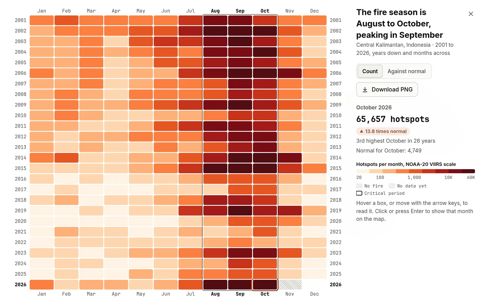

NASA Space Apps Challenge 2026Kuala LumpurHarmonization of MODIS and VIIRS Hot Spots
Fire Harmony
One consistent worldwide fire record from MODIS and VIIRS, November 2000 to October 2026, with a burning calendar, anomalies, trends, drivers, an outlook and downloads for any place on Earth.
Team Kopi and Cosmos: Saw Yong Quan and Yap Yong Son

- 640.6millionDetections read: every NASA FIRMS hotspot of five satellites. On the NOAA-20 scale they make 443 million hotspots.
- 8.4timesthe fake jump in 2012 when the two records are simply joined
- +0.55%the step left in Fire Harmony at that change, inside the normal spread
- 26yearsof monthly fire on one scale, for any area you pick
What you can do in five minutes
Each link opens the app at the right place.
- Find the fire around your cityType a city, country or state: every month of fire since 2000, within 50 km.
- See the jump of 2012 disappearThe record joined naively and harmonized, with every test of the seam.
- Rank every country by its trendRising or falling only where the false discovery test holds.
- Map where fire rose and fellThe trend of every large hexagon, 2001 to 2025.
- Trace the haze in Kuala LumpurHow much of the PM2.5 is smoke from Sumatra and Borneo, season by season.
- Download the recordOpen Parquet and JSON files, with code to query them in place.
- See a burning calendar: Central KalimantanEvery month since 2001 in one grid, with the fire season outlined and the peat years standing out.
- See a burning calendar: Corrientes, ArgentinaOpens on February 2022, when the Iberá wetlands burned, against every month since 2001.
Everything in one place
-
Web app
The Explorer with its map and burning calendar, the Dashboard, Rankings of every place, Haze, Methods and Data, and Ask for questions in plain words. Free, no login, on a laptop or a phone.
-
Research report
The data, the method, every test of the seams, the trends and their limits, with references.
-
Poster
The project on one page: the problem, the method, the proof and the app.
-
Code
The data pipeline, the model, the tests and the app. Apache 2.0 licence.
-
Data
The harmonized record, the maps and all 640.6 million hotspots as open Parquet files.
-
Final video
The problem, the data, how we harmonize, the app live, and what we found.
-
30 second demo
The whole idea in half a minute.
The project
Satellites have recorded fire hotspots since 2000, but the record is split between two kinds of sensor. MODIS flew alone until 2012. Its successor, VIIRS, sees much smaller fires. One VIIRS satellite counts about eight times as many hotspots as one MODIS satellite, so a simple join creates a fake jump in 2012 and hides the real trends.
Fire Harmony puts every satellite on the NOAA-20 VIIRS scale. A machine learning model, trained in the years when both sensors flew, converts every MODIS month, and every modelled value has a 90% range. At both sensor changes the record moves by less than 1%, inside the noise of ordinary years, and ESA burned area maps agree at the 2012 switch.
In the app, for any place
- Pick a place, draw a shape or type coordinates.
- Pick any range of months.
- See the burning calendar, the anomaly against normal and its rank, the trend and the critical period.
- See why a month was unusual and the outlook for the next three months.
- Download the monthly record, the charts, and every hotspot as CSV.
- Ask questions in plain words: answers come from the data, each with a link to the place on the map.